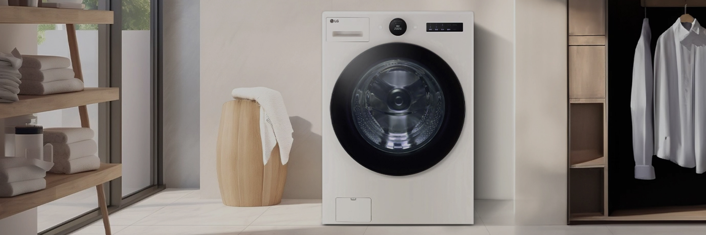

의류워시타워,세탁기


보다 더 스마트한 일상
LG ThinQ의 시작

보다 더 스마트한 일상, LG ThinQ
씽큐는 사람과 가전을 AI 기술로 연결하여 더 편리하고 놀라운 일상을 만드는 LG전자의 스마트 홈 플랫폼입니다.
* 본 콘텐츠는 ThinQ 앱의 콘텐츠입니다.
지구를 위한 지속 가능한 세탁법, 미세플라스틱케어 코스를 소개합니다.
그만큼 우리 생활에서 나온 미세 플라스틱이 깊은 바다까지 흘러가며 환경을 오염시키고 있다는 건데요. 세계자연보전연맹(IUCN)에 따르면 해양 미세 플라스틱의 여러 발생원 중에서도 합성섬유 의류 세탁이 무려 35%를 차지하며, 바다를 오염시키는 주범이라고 해요. 상당히 놀라운 수치죠?
따라서 옷을 구매할 때는 되도록 100% 합성섬유 대신 혼방섬유의 옷을 선택하는 것이 환경에 부담을 줄일 수 있어요. 또 세탁법을 바꿔보는 것도 추천하는데요. 세탁할 때 가급적 낮은 온도의 물을 사용하고, 옷을 모아서 한꺼번에 세탁하면 미세 플라스틱 발생량을 낮추는 데 도움이 될 수 있어요.
그 답은, 미세플라스틱케어 코스 안에 있어요. 미세플라스틱케어 코스는 6모션 중 옷감 마찰을 줄이는 흔들기, 비비기, 주무르기 모션과 세제 수를 직접 뿌리는 5방향 터보샷이 특징인데요. 이러한 섬세한 세탁을 통해 표준 코스 대비 미세 플라스틱 배출을 70%나 줄였고, 에너지 사용량도 30% 저감했어요.
1. ThinQ 앱에서 'UP가전 센터'를 눌러주세요.
2. 화면에 나오는 업그레이드 가능 항목 중 '미세플라스틱케어' 코스를 선택해 주세요.
3. 하단의 '업그레이드 하기'를 눌러주세요.
4. 업그레이드가 완료되면 제품 화면의 '완료 문구'를 확인해 주세요. 이후 제품은 자동으로 off 됩니다.
5. 세탁기 또는 워시타워 전원을 다시 켜고 세탁물을 넣은 후 '미세플라스틱케어' 코스를 선택해 주세요.
6. '시작/일시정지' 버튼을 눌러 세탁을 시작하면 끝!
* 미세플라스탁케어 코스는 '22년 이후 출시된 UP가전 적용 세탁기, 워시타워에 한하여 사용 가능합니다.


LG ThinQ
ThinQ 하나로 더 좋아지는 일상
일상을 더 편하고 스마트하게 만들어주는 씽큐 앱을 지금 바로 만나보세요.
- #세탁기
- #워시타워
- #환경보호
- #미세플라스틱
- #앱가전
- #미세플라스틱케어코스
출처 및 고지사항
*참고자료
- savoca, Held measurements revea, exposure nskto microplastic ingestion by filter feeding megafauna, Nature Communications 6327 (2022), 1.
- Julien Boucher, Damien Friot, Primary Microplastics in the Ocean, (Switzerland: IUCN, 2017), p21.
- 저로웨이스트 실험실 세탁만 해도 미세플라스틱이 달달... 줄일 수 없을까?. 한국일보(웹사이트]. (2021년 9월 14일) >
- LG 트롬 오브제컬렉션 워시타워, LG전자[웹사이트) >
* 고지사항
* [미세플라스틱 배출량]
- 시험기관 : 자사 시험결과 인터텍 검증 / KOTITI 시험연구원
- 시험기관 : 자사 시험결과 인터텍 검증 / KOTITI 시험연구원
- 시험 부하: 인터텍 (폴리어스테르 100% 소재의 트레이닝 재킷 3kg)/ KOTITI 시험연구원 (폴리에스테르 100% 편직물 3kg)
- 시험 방법 및 결과
• 인터역 검증 결과 자사가 제시한 조건으로 자사 기존 세탁기(FX24****) 표준코스 40°C와 미세플라스닉키어코스 30°C에서 20m(마이크로미터)이 상의 필터에 걸러지는 미세플라스틱 배출량 숙정 시, 표준코스 대비 70% 저감
• KOTITI 시험연구원 검증 결과 자사 기존 세탁기(FX25****) 표준코스 40°C와 미세플라스틱키어코스 30C에서 10m(마이크로미터)이상의 필터 에 걸러지는 미세플라스틱 배출량 및 미세플라스틱의 가수 정 시, 표준코스 대비 70% 저감
* 미세플라스틱배출 시험 결과는 사용 환경 및 의류 종류 등어 따라 차이가 있을 수 있습니다.
[에너지사용량/옷감손상]
- 시험기관 : 자사 시험결과 인터텍 김증 시험 부하: 국제규격부하 3kg 기준
- 시험 방법 : 자사가 제시한 조건으로 자사 기존 세탁기(FX24VS) 표준코스 40°C와 미세플라스틱케어코스 30C에서 소비전력량 및 옷감손상비고
- 시험 결과 : 자사 기존 세탁기(FX24VS) 표준코스 대비 에너지 사용량 30%감소, 옷감손상 70% 저감 (poka-dot 시험포 사용)
- 에너지사용량 및 옷감손상 시험 결과는 사용환경 및 의류종류 등에 따라 차 이가 있을 수 있습니다.
* 미세플라스탁케어 코스 적용 모델
- W20**, W21**, WL21**, FX25**, FX24**, FX23** 이외 UP가전 모델은 순차적으로 업데이드 예정임)